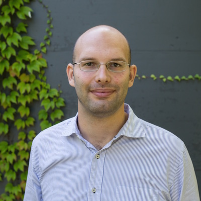

Hi. I'm Luigi Palumbo.
I am a young, energetic, and curious professional. I continuously look for new challenges and opportunities to exploit. I love to learn and apply new concepts. I am driven to shape the world of tomorrow and make it a better place.
My academic background includes Management and Econometric studies, with a set of specialisations in City Center Management, Entrepreneurship, and Innovation.
My professional experience is mostly focused on sales, with a strong consultative approach. I am used to manage multiple projects at the same time and operate in a multinational/multicultural context.
Get in touch with me on LinkedIn or Twitter.
Have a look at my projects